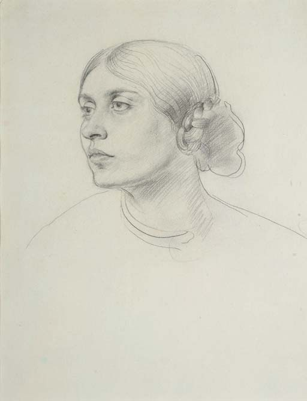

potrait of Dorelia
Artist: Augustus John
Augustus Edwin John OM RA (4 January 1878 – 31 October 1961) was a Welsh painter, draughtsman, and etcher. For a time he was considered the most important artist at work in Britain: Virginia Woolf remarked that by 1908 the era of John Singer Sargent and Charles Wellington Furse "... was over. The age of Augustus John was dawning."[1] He was the younger brother of the painter Gwen John.
Year: 1878-1961
Medium: painting
Dimensions: 28.8 x 24.8 x 2cm.
Location: united-kingdom
Price: $120 Million